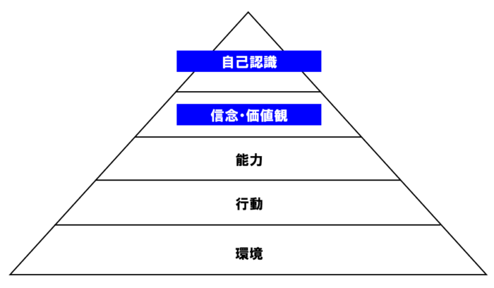
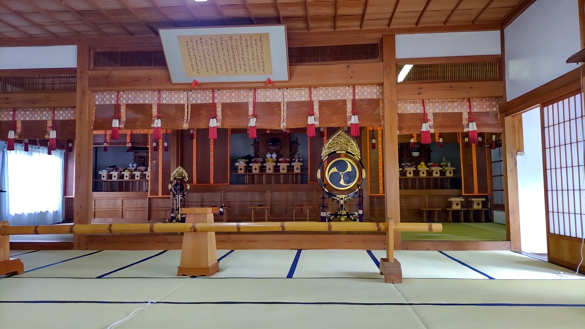

転職を繰り返す人の心理と対処方法【天理教の教え】
2022-06-15 by 内田裕之
こんにちは、うっちゃんです。
こんな悩みを抱えていませんか？
- 転職を何度も繰り返してしまう。
- 仕事の評価が悪かったり、人間関係がうまくいかない。
- 私にはもっと向いている仕事があるといつも思う。
この記事ではそんな悩みを解決します。
この記事でわかること
- 転職を繰り返す人は自分を受け入れてくれる場所を探し求めている。
- 環境で生きており、失敗やトラブルをきっかけに居場所を変える。
- 自分は人よりも偉いとうぬぼれている。
この記事が幸福な人生を送るきっかけになると嬉しく思います。
相談内容

今回は31歳男性の方から悩み相談を受けました。
私は13年間で5回の転職をしています。勤務期間は長くて5年、短くて1年未満です。
仕事は一生懸命こなしていますが、仕事の評価が悪かったり、人間関係がうまくいかないことが多いです。
そのたびに私にはもっと向いている仕事があると思いたち転職をしてきましたが、30歳を超えてくると受け入れてくれる会社も限られてきます。
一体どうしたらよいのでしょうか？
転職を繰り返す人の心理
まずは転職を繰り返してしまう原因を掘り下げていきます。
与えられるものと勘違いしている
より良い環境を求めてスキルアップしたり転職したりするのは素晴らしいと思います。
ただ、入社したら会社が用意してくれるものと考えるのは誤りです。
天理教の教えでは「ほしい」という心のほこりがあります。
これは自分を省みないで、むやみにほしがる様子を指します。
（参考：天理教の教え）
働くときは「自分がどれだけ会社の売上に貢献しているか」に意識を向けましょう。
なぜなら会社は売上から給料という経費を支払うからです。
売上に貢献する人にこそ会社は良い環境を用意します。
環境で生きている
「ほしい」という心のほこりが積もると環境を求めて逃げ回るようになります。
仕事の失敗や低い評価、人間関係などの悩みをきっかけに今の職場から逃げたい気持ちが強くなり、転職先を探して回る。
これを繰り返すのが「環境で生きる」状態です。
（参考：ニューロロジカル）
上図はニューロロジカルといって人の行動を支配するものです。
上位の思考部分が下位の行動や環境に影響を及ぼします。
転職を繰り返す悩みでは、「今の私を受け入れてくれる場所があるはず」という思考が「転職を繰り返す」行動をつくり、「低い給料・ひどい人間関係・もう転職先がない」環境を作ります。
自分は人よりも偉いとうぬぼれている
天理教のもうひとつの教えに「こうまん」があります。
これは自分は人よりも偉いとうぬぼれる様子を指します。
（参考：天理教の教え）
「今の私は全く問題がないから受け入れてくれる場所を探せばいい」と考えているのではないでしょうか？
売上にどれだけ貢献しているか？
常に自問して傲慢にならないように気をつけたいものです。
天理教の教えからアドバイス
ここからは具体的に何をすればよいか、天理教の教えから考えていきます。
自分を知る
まずは環境で生きている自分に気づきましょう。
自分がどんな思考で行動してきたのか、意識を向けて振り返る必要があります。
天理教の神殿には鏡が置かれていますが、これは自分を知る大切さを説いています。
ほこりを掃除する
「ほしい」「こうまん」というほこりに気づき、心の掃除をしましょう。
経典の第七章では以下のように書かれています。
人の幸福は、その境遇に在るのではなく、人生の苦楽は、外見によって定まるのではない。
すべては、銘々の心の持ち方によって決まる。
心の持ち方を正して、日々喜び勇んで生活すのが、信心の道である。
（参考：天理教経典）
受け入れてくれる場所は「自分でつくる」意識を持ちましょう。
売上に貢献する意識を持てば、自ずと成果は出て、収入も待遇も良くなります。
心を常に磨く
人は一度決心しても、つい時間が立つとまわりの意見に流されたり、今の自分のままでいようとする思考が働きます。
幸福な人生を歩むためには、たえず自分の心を磨きましょう。
天理教では人々が陽気に暮らすための教えを教会でお伝えしています。
もっと天理教を学びたい、人生をより良くしたいと思ったらぜひ教会に行ってみませんか？
お会いできるのを楽しみにお待ちしています。
天理教の教会を見る